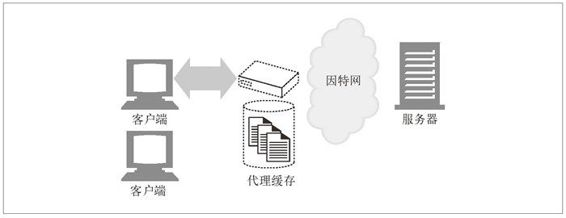
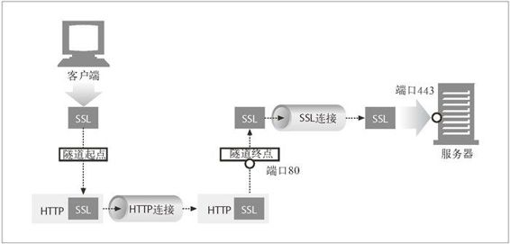

1.8 Web 的结构组件
在本章的概述中，我们重点介绍了两个 Web 应用程序（Web 浏览器和 Web 服务器）是如何相互发送报文来实现基本事务处理的。在因特网上，要与很多 Web 应用程序进行交互。在本节中，我们将列出其他一些比较重要的应用程序，如下所示。
代理
位于客户端和服务器之间的 HTTP 中间实体。
缓存
HTTP 的仓库，使常用页面的副本可以保存在离客户端更近的地方。
网关
连接其他应用程序的特殊 Web 服务器。
隧道
对 HTTP 通信报文进行盲转发的特殊代理。
Agent 代理
发起自动 HTTP 请求的半智能 Web 客户端。
1.8.1 代理
首先我们来看看 HTTP 代理服务器，这是 Web 安全、应用集成以及性能优化的重要组成模块。
如图 1-11 所示，代理位于客户端和服务器之间，接收所有客户端的 HTTP 请求，并将这些请求转发给服务器（可能会对请求进行修改之后转发）。对用户来说，这些应用程序就是一个代理，代表用户访问服务器。
图 1-11 在客户端和服务器之间转发流量的代理
出于安全考虑，通常会将代理作为转发所有 Web 流量的可信任中间节点使用。代理还可以对请求和响应进行过滤。比如，在企业中对下载的应用程序进行病毒检测，或者对小学生屏蔽一些成人才能看的内容。我们将在第 6 章详细介绍代理。
1.8.2 缓存
Web 缓存（Web cache）或代理缓存（proxy cache）是一种特殊的 HTTP 代理服务器，可以将经过代理传送的常用文档复制保存起来。下一个请求同一文档的客户端就可以享受缓存的私有副本所提供的服务了（参见图 1-12）。

图 1-12 保存常用文档本地副本以提高性能的代理缓存
客户端从附近的缓存下载文档会比从远程 Web 服务器下载快得多。HTTP 定义了很多功能，使得缓存更加高效，并规范了文档的新鲜度和缓存内容的隐私性。第 7 章介绍了缓存技术。
1.8.3 网关
网关（gateway）是一种特殊的服务器，作为其他服务器的中间实体使用。通常用于将 HTTP 流量转换成其他的协议。网关接受请求时就好像自己是资源的源端服务器一样。客户端可能并不知道自己正在与一个网关进行通信。
例如，一个 HTTP/FTP 网关会通过 HTTP 请求接收对 FTP URI 的请求，但通过 FTP 协议来获取文档（参见图 1-13）。得到的文档会被封装成一条 HTTP 报文，发送给客户端。第 8 章将探讨网关。
图 1-13 HTTP/FTP 网关
1.8.4 隧道
隧道（tunnel）是建立起来之后，就会在两条连接之间对原始数据进行盲转发的 HTTP 应用程序。HTTP 隧道通常用来在一条或多条 HTTP 连接上转发非 HTTP 数据，转发时不会窥探数据。
HTTP 隧道的一种常见用途是通过 HTTP 连接承载加密的安全套接字层（SSL， Secure Sockets Layer）流量，这样 SSL 流量就可以穿过只允许 Web 流量通过的防火墙了。如图 1-14 所示，HTTP/SSL 隧道收到一条 HTTP 请求，要求建立一条到目的地址和端口的输出连接，然后在 HTTP 信道上通过隧道传输加密的 SSL 流量，这 样就可以将其盲转发到目的服务器上去了。

图 1-14 隧道可以在非 HTTP 网络上转发数据（显示的是 HTTP/SSL 隧道）
1.8.5. Agent代理
用户 Agent 代理（或者简称为 Agent 代理）是代表用户发起 HTTP 请求的客户端程序。所有发布 Web 请求的应用程序都是 HTTP Agent 代理。到目前为止，我们只提到过一种 HTTP Agent 代理：Web 浏览器，但用户 Agent 代理还有很多其他类型。
比如，有些自己会在 Web 上闲逛的自动用户 Agent 代理，可以在无人监视的情况下发布 HTTP 事务并获取内容。这些自动代理的名字通常都很生动，比如“网络蜘蛛”（spiders）或者“Web 机器人”（Web robots）（参见图 1-15）。网络蜘蛛会在 Web 上闲逛，搜集信息以构建有效的 Web 内容档案，比如一个搜索引擎的数据库或者为比较购物机器人生成的产品目录。更多信息请参见第 9 章。
图 1-15 自动搜索引擎“网络蜘蛛”就是 Agent 代理，可以从世界范围内获取 Web 页面